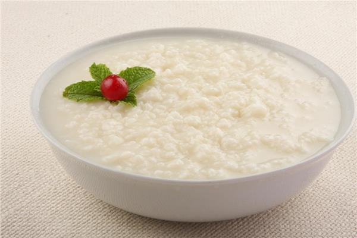

Rice pudding

ingredients
- whole milk
- sugar
- rice
- vanilla extract
- cinnamon stick
Steps
- Combine the milk, water, sugar, cinnamon stick and rice. Stir to combine.
- Bring to an intense simmer, stirring often. Reduce heat to maintain a steady simmer, stirring often, cook until the rice is tender, about 35 to 45 minutes.
- Remove from heat and remove the cinnamon stick.
- Stir in the vanilla bean paste or vanilla extract and raisins, if using.
- Transfer the rice pudding into individual ramekins or small containers OR a large serving dish.
- Cool the pudding cool slightly before serving or let cool to room temperature, cover tightly and refrigerate until ready to serve, up to 1 day in advance.
- Just before serving, top with freshly grated cinnamon or ground cinnamon. Pudding can be enjoyed warm or cooled.